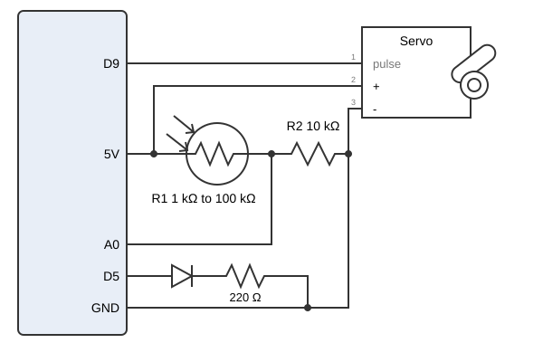
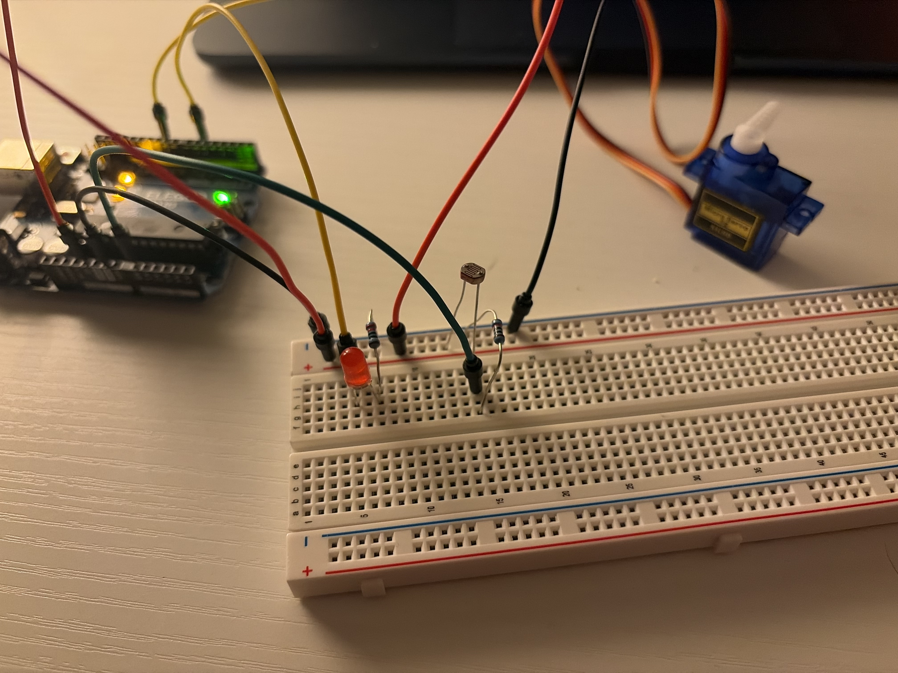
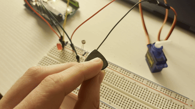
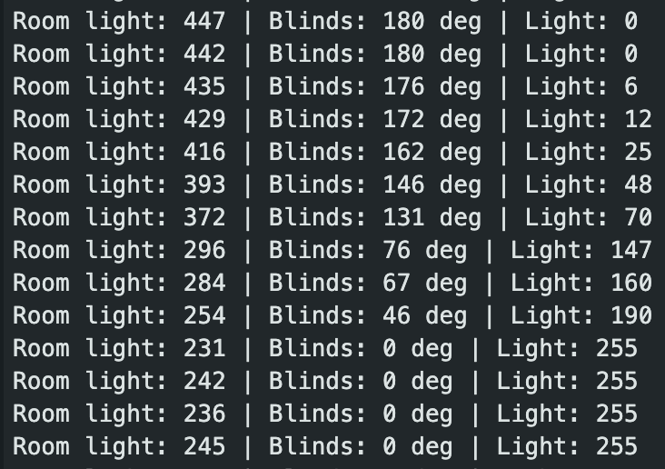
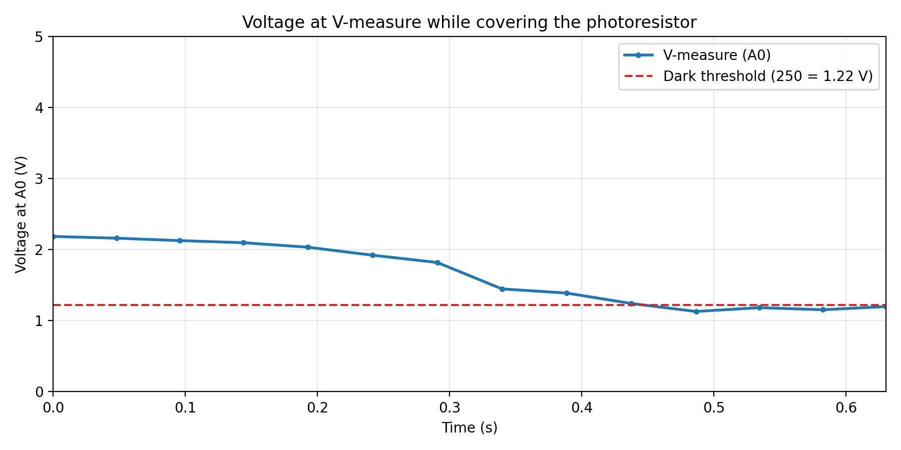

Overview
I prototyped daylight-aware window blinds for a smart home. A photoresistor in a voltage divider senses room brightness. A servo acts as the blinds: open in bright light, closing as the room dims, and fully shut once it is dark. An LED night light does the opposite, glowing brighter as the room dims.
Schematic

Voltage divider calculation
With the photoresistor as R1 and the fixed resistor as R2:
Vmeasure = 5 V × R2 / (R1 + R2)
A photoresistor is typically about 1 kΩ in bright light and about 100 kΩ in the dark. Choosing R2 as the geometric mean of those puts the output in the middle of the 0 to 5 V range:
R2 = √(1 kΩ × 100 kΩ) = 10 kΩ
Expected values at A0 with R2 = 10 kΩ:
| Condition | R1 | Vmeasure | analogRead (V / 5 × 1023) |
|---|---|---|---|
| Bright | 1 kΩ | 5 × 10 / 11 = 4.55 V | 930 |
| Medium | 10 kΩ | 5 × 10 / 20 = 2.50 V | 512 |
| Dark | 100 kΩ | 5 × 10 / 110 = 0.45 V | 93 |
My actual readings and the values chosen for the code, converted with
V = reading / 1023 × 5 and
R1 = 10 kΩ × (1023 / reading - 1):
| Value | analogRead | Vmeasure | R1 |
|---|---|---|---|
| Room light (measured) | 442 | 2.16 V | 13 kΩ |
| Map top (chosen) | 440 | 2.15 V | 13 kΩ |
| Dark threshold (chosen) | 250 | 1.22 V | 31 kΩ |
| Hand over sensor (measured) | 231 | 1.13 V | 34 kΩ |
| Map bottom (chosen) | 190 | 0.93 V | 44 kΩ |
LED resistor calculation
A red LED drops about 2 V, so the resistor takes the other 3 V:
I = (5 V - 2 V) / 220 Ω = 13.6 mA. That is under the
LED's 20 mA rating and the Arduino pin's recommended 20 mA, and still
bright.
Circuit

Firmware
// Include the Servo library so the servo can be controlled with angles
#include <Servo.h>
// Create a servo object that represents the blinds
Servo blinds;
// Reading below this counts as dark
const int DARK_THRESHOLD = 250;
// PWM pin for the night light LED
const int LED_PIN = 5;
void setup() {
// Start serial communication at 9600 baud
Serial.begin(9600);
// Connect the blinds servo object to its signal pin
blinds.attach(9);
// Set the night light pin as an output
pinMode(LED_PIN, OUTPUT);
}
void loop() {
// Read the divider voltage as a number from 0 to 1023
int reading = analogRead(A0);
// Map the usable range 190 to 440 to a servo angle (dark closes at 0, bright opens at 180)
int angle = map(reading, 190, 440, 0, 180);
// Keep the angle inside 0 to 180 in case a reading falls outside the mapped range
angle = constrain(angle, 0, 180);
// Map the same range to LED brightness, reversed so darker means brighter
int brightness = map(reading, 190, 440, 255, 0);
// Keep the brightness inside the 0 to 255 range analogWrite accepts
brightness = constrain(brightness, 0, 255);
// Check whether the room is dark enough to shut the blinds completely
if (reading < DARK_THRESHOLD) {
// Close the blinds fully
angle = 0;
// Turn the night light fully on
brightness = 255;
}
// Move the blinds to the final angle
blinds.write(angle);
// Set the night light brightness with PWM
analogWrite(LED_PIN, brightness);
// Label the light reading on the serial monitor
Serial.print("Room light: ");
// Print the raw light reading
Serial.print(reading);
// Label the blinds angle
Serial.print(" | Blinds: ");
// Print the servo angle in degrees
Serial.print(angle);
// Label the night light brightness
Serial.print(" deg | Light: ");
// Print the brightness and end the line
Serial.println(brightness);
}Why these values (voltages and resistances are in the table above):
- 440 (2.15 V): just under my room-light readings (442 to 447), so normal room light opens the blinds fully.
- 250 (1.22 V): just above where the reading settles with my pick over the sensor (231 to 245), so covering the sensor always triggers it. At 250 the mapped angle is 43°, so the blinds snap shut from there.
-
190 (0.93 V): below every reading I recorded, so
map()alone never closes the blinds. Closing is left to theifstatement. - 0 to 180: the servo's angle range.
-
255 to 0:
analogWrite()takes 0 to 255 (8-bit). The range is reversed so a darker room gives a brighter LED.
The servo uses the Servo library instead of
analogWrite() because it needs 50 Hz pulses and the Uno's
PWM runs at 490 or 980 Hz.
Circuit operation

Serial monitor output

Additional questions
1. Can the variable resistor be R1 or R2?
Either works. Swapping them only flips the direction of the response:
| Setup | Bright (1 kΩ) | Dark (100 kΩ) |
|---|---|---|
| Photoresistor as R1 | 5 × 10 / (1 + 10) = 4.55 V | 5 × 10 / (100 + 10) = 0.45 V |
| Photoresistor as R2 | 5 × 1 / (10 + 1) = 0.45 V | 5 × 100 / (10 + 100) = 4.55 V |
Both span 0.45 V to 4.55 V. I used R1 so brighter light gives a bigger reading.
2. Voltage at V-measure over time

V = reading / 1023 × 5. Time is estimated from the
baud rate: the sketch has no delay, so each line takes about 50 ms
to send at 9600 baud. The voltage falls from 2.18 V in room light to
below the 1.22 V threshold as my hand covers the sensor.
3. What changes with 10-bit PWM and a 16-bit ADC?
A 16-bit ADC reads 0 to 65535 instead of 0 to 1023, so every input
value scales by 65535 / 1023 ≈ 64: 190 to 440 becomes 12,170 to
28,190, and the threshold of 250 becomes 16,020. The reading becomes a
long, since an int on the Uno only goes up
to 32,767. 10-bit PWM takes 0 to 1023 instead of 0 to 255, so the
LED's range becomes 1023 to 0. The servo's output stays 0 to 180
because blinds.write() takes degrees. Changed lines:
long reading = analogRead(A0);
int angle = map(reading, 12170, 28190, 0, 180);
int brightness = map(reading, 12170, 28190, 1023, 0);
brightness = constrain(brightness, 0, 1023);
if (reading < 16020) {
brightness = 1023;
}